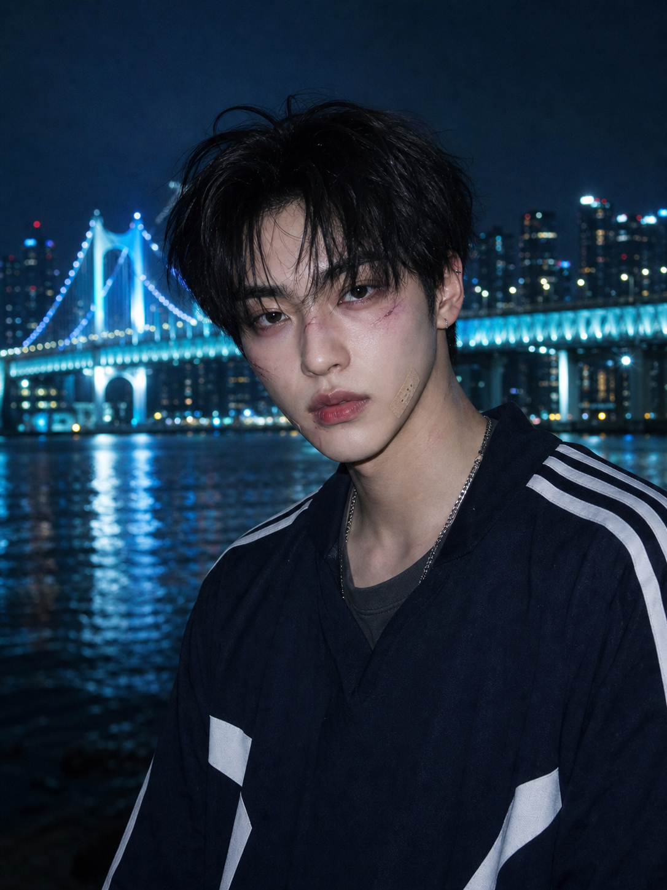
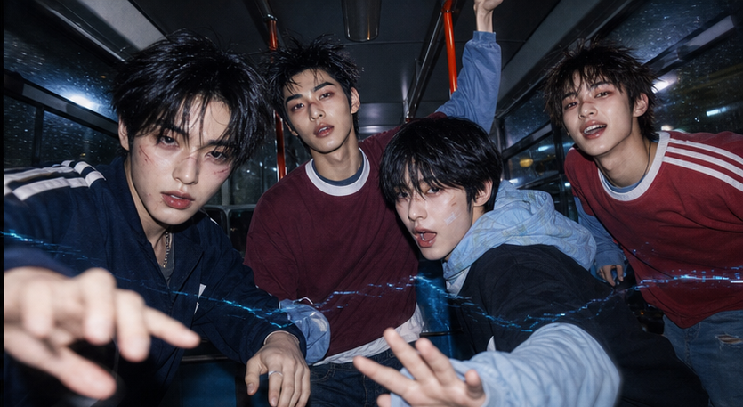
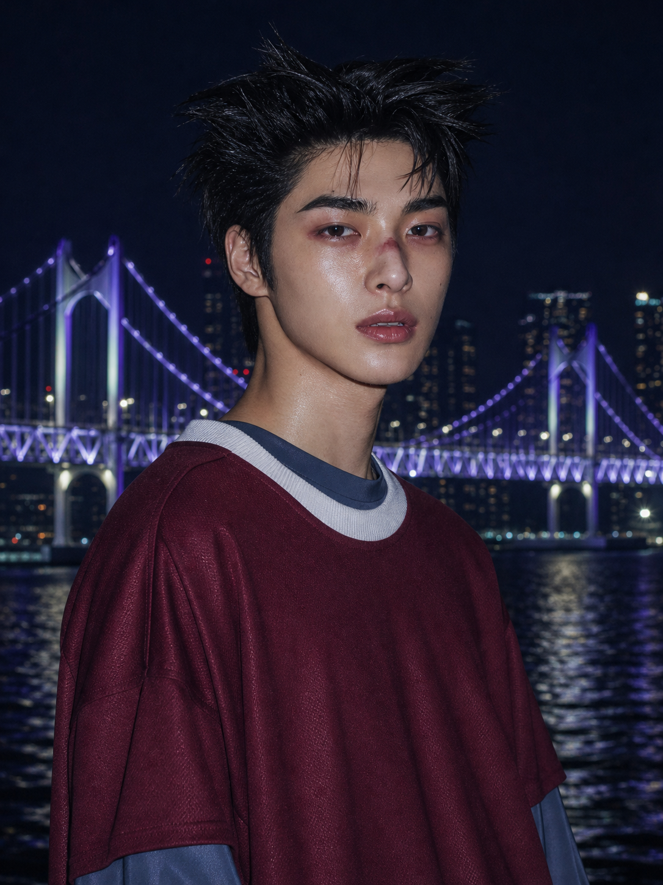
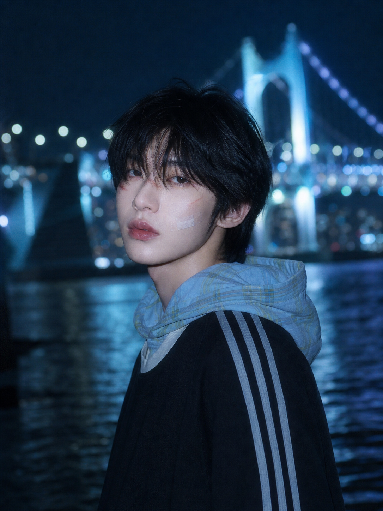

01NOX 녹스
차분하고 퇴폐적인 분위기 속 자유로운 감각. 상징은 밤과 신호.
- LEADER
- MAIN RAPPER
- PRODUCER

NARU STUDIO / IDOL PROJECT / 2026
BLUE IS NOT THE SEA.
BLUE IS OUR FREQUENCY.
SCROLL TO TUNE
00—PROJECT SIGNAL
NØISE는 부산의 밤과 서브컬처를 먹고 자란 10대 후반의 네 친구가 모인 NARU studio의 AI 아이돌 프로젝트입니다. 서로 다른 주파수를 가진 네 사람이 NARU라는 플랫폼 위에서 하나의 인공적인 울림을 만들고, 온라인과 오프라인의 경계를 넘나듭니다.
01—FOUR FREQUENCIES
각기 다른 결의 네 목소리가
하나의 도시를 통과합니다.

01차분하고 퇴폐적인 분위기 속 자유로운 감각. 상징은 밤과 신호.

02날카로운 인상과 강한 무대 장악력. 금속음과 글리치, 서로 다른 세계의 교차점.

03부드러운 비주얼과 섬세하고 우울한 분위기. 새벽빛 파우더 블루의 몽환적인 보컬.
장난스럽고 친근한 에너지. 밝은 반응과 유연한 무대 표현으로 팀과 팬을 연결합니다.
02—FIRST TRANSMISSION
목적지가 표시되지 않은 마지막 버스. 네 소년은 부산의 밤거리를 가로지르며 서로의 목소리로 사라진 주파수를 되살립니다. 찾는 것은 종점이 아니라, 함께 달리는 순간 그 자체입니다.
“We go blue, not the sea.
Ride with me, all night.”